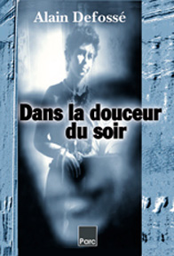

Préfigurant son bouleversant roman
On ne tue pas les gens
Flammarion (janvier 2012)
––––––––––––––––––––––––––––––––––––––––––––––––––––––––––––––––––––––––––––––––––––––––––––
|  Couverture : photo Michel Aguilera. |
Boléro, dans la douceur du soir... Une femme fredonne cette rengaine, chaque nuit, seule dans une grande maison. Elle a posé son verre de whisky près du pick-up où tourne le 78 tours. On l'appelle la Baronne. Dans la paix de la campagne et de l'alcool, elle rêve sa vie, rêve à la vie qui fut la sienne, et ce rêve n'est pas toujours bleu. Elle n'attend plus rien. Et puis surgit un jeune homme, comme un regain de flamme ou une dernière illusion. Un jeune homme très beau, qui exige sans rien demander. La Baronne, arrachée à elle-même, voudrait tout lui donner, alors qu'il ne lui reste rien. Elle n'a plus qu'une chose à lui offrir : sa raison. Dans ce jeu incertain entre deux êtres troubles et perdus, les masques tomberont jusqu'au drame. Un roman rare, intimiste et violent, qui nous plonge au coeur de la solitude et de la perte, et s'achève dans la douleur d'un matin...
Alain Defossé est né en 1957. Il est traducteur de littérature anglaise et américaine, notamment de Bret Easton Ellis (American Psycho), John King, Irvine Welsh. Dans un genre très différent, il nous a donné des « romans qui parlent à l'oreille de ceux qui les méritent » (Gabrielle Rolin, L'Express) : Les Fourmis d'Anvers (Salvy, 1991 - reéditées aux éd. Du Rocher, coll. "Motifs" 2007), Retour à la ville (Salvy, 1995), Dimanche au Mont Valérien (Joca Seria, 2000) et, plus récemment, Chien de cendres (Panama, 2006), et L'Homme en habit, (Du Rocher, 2007). |
|
|
Lecture sur France Culture = l'émission en première entrée. : https://www.facebook.com/profile.php?id=1299973764